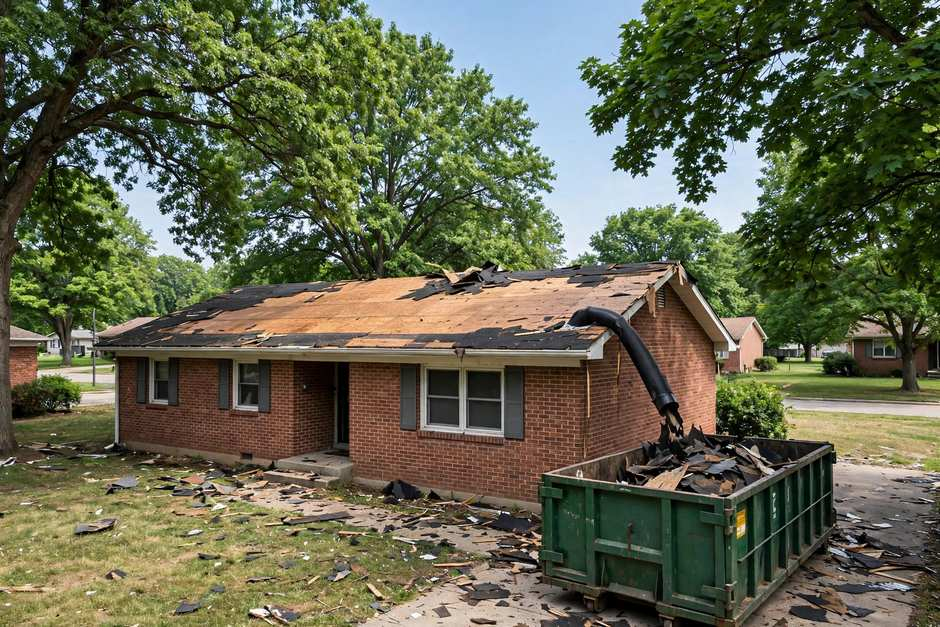
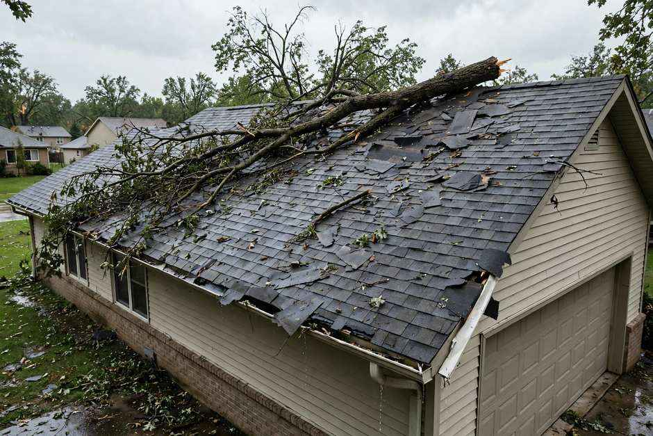
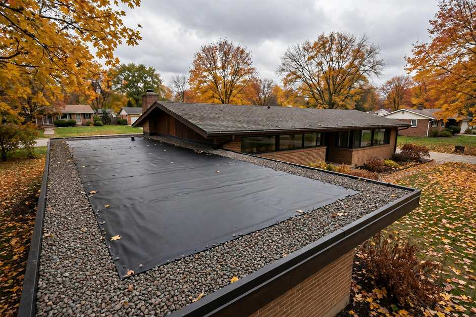
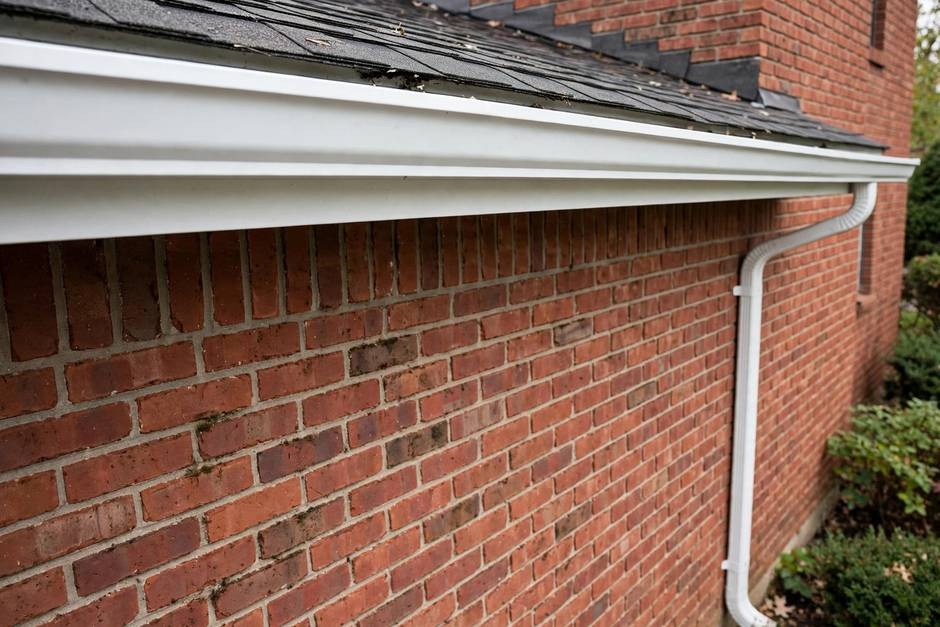
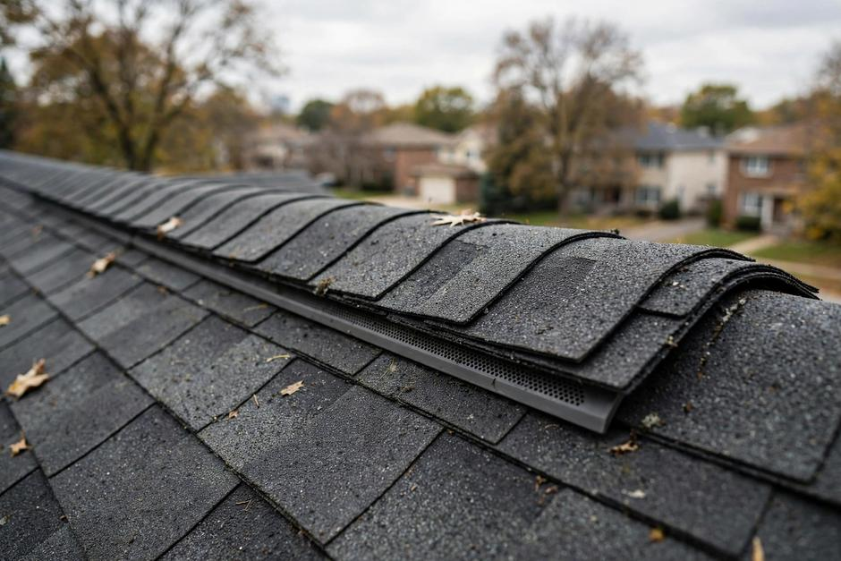

Big Bend Drive
The named street of the subdivision, and the street the City’s stormwater page names for the purchased and demolished structures. The subdivision’s housing sits along it.
Big Bend is the only Des Plaines subdivision whose existence, floodplain location, and buyout history are verified in federal and City sources — and much of it has been or is being removed. This page acknowledges that context before any roofing discussion, and it does not imply a large, stable, or intact housing stock, or market re-roofs to homes slated for acquisition. WP Exterior Inc serves addresses inside the Des Plaines city limits; call (224) 802-4866 during office hours.
Describe what you are seeing on the roof. Calls are answered during the office hours listed below.
Call (224) 802-4866 → Phone is the only contact channel. No email or online form.Because no roof pattern is verified for the remaining houses, every service below starts from inspection of the individual house, and no service is marketed to homes slated for acquisition. Related reading: what to do first after emergency roof damage and why water leaks from a ceiling. See the full list on the services page.

Roof ReplacementReplacement is discussed only for a specific house after inspection, and only where it makes sense for that house’s situation. No remaining-house count and no market claim is made on this page.View details → Roof RepairRepair scope follows what inspection finds on the individual house — a flashing detail, a penetration, a damaged section — rather than any assumed pattern. Homes slated for acquisition are not marketed re-roofs.View details →
Roof RepairRepair scope follows what inspection finds on the individual house — a flashing detail, a penetration, a damaged section — rather than any assumed pattern. Homes slated for acquisition are not marketed re-roofs.View details → Roof InspectionInspection comes first in Big Bend, because no era or form data is verified for the remaining houses. The surface, flashing, valleys, penetrations, and accessible attic conditions are recorded with photographs and written findings, house by house.View details →
Roof InspectionInspection comes first in Big Bend, because no era or form data is verified for the remaining houses. The surface, flashing, valleys, penetrations, and accessible attic conditions are recorded with photographs and written findings, house by house.View details → Emergency Roof RepairEmergency roof repair addresses active leaks and storm breaches. Call during office hours, describe what is happening at the house, and the next step is arranged from there.View details →
Emergency Roof RepairEmergency roof repair addresses active leaks and storm breaches. Call during office hours, describe what is happening at the house, and the next step is arranged from there.View details →
Storm Damage Roof RepairStorm damage is recorded with dated photographs and written findings for the homeowner’s own records. River-forest tree exposure around the bend makes limb-fall and debris a general exposure, not a measured risk.View details →
Flat Roof RepairLow-slope sections — over an addition, porch, or garage — are checked on their own terms: seams, ponding, and the tie-in where low-slope meets pitched. Whether a given house has such a section is an inspection finding.View details →
Gutter InstallationGutters, downspouts, fascia, and soffit form the drainage edge of the roof. Their condition is assessed per house, alongside the roof edge they serve.View details → Roof Ventilation InstallationVentilation is part of the roof assembly: intake at the soffit and exhaust at the ridge. What a given Big Bend house has, and what it needs, is an inspection question, not an assumption.View details →
Roof Ventilation InstallationVentilation is part of the roof assembly: intake at the soffit and exhaust at the ridge. What a given Big Bend house has, and what it needs, is an inspection question, not an assumption.View details →
Flood is the story in Big Bend, and the buyout context shapes every conversation. Nothing on this page implies a stable or intact housing stock.
FEMA and City sources verify acquisition and demolition in Big Bend across different grants, aims, and dates. The remaining-house count in 2026 was not verified, and this page states none.
How we help: The situation of the specific house — including whether acquisition affects it — is part of the first conversation, before any roofing scope is discussed.
Age and form breakdowns for the remaining houses were not verified. Assigning era labels to Big Bend houses would invent facts, so this page assigns none.
How we help: Every house is inspected on its own facts: surface, flashing, valleys, penetrations, and accessible attic conditions, recorded with photographs and written findings.
Big Bend sits in the regulatory floodplain, with repetitive loss and the 2013 crest and evacuations around Big Bend Lake in the record. Flood-zone status for any address is never assumed.
How we help: A FEMA Flood Insurance Rate Map check is made per address, and a new roof is never presented as protection against river flooding.
Stains on ceilings or walls after rain or thaw
Shingle granules collecting in gutters or at downspouts
Curling, cracking, or missing shingles
Loose flashing at a chimney, wall, or vent penetration
Daylight through attic roof boards, or staining on the underside
No plat, street list, or polygon was read for Big Bend, so no boundary is drawn. The anchors below are the street, the river bend, the lake across the river, and the green space the City’s plan names.
The named street of the subdivision, and the street the City’s stormwater page names for the purchased and demolished structures. The subdivision’s housing sits along it.
The subdivision sits in the crook of a large river bend, west of I-294. The river is the reason for both the name and the floodplain.
Across the river from the subdivision, Big Bend Lake is Forest Preserves of Cook County land. It is never housing, and the lake name must not be used to draw the subdivision.
The Comprehensive Plan names Big Bend Drive green space in its buyout discussion. Cleared lots are part of the present-day picture here, and a 2022 account notes many residential lots cleared.
WP Exterior Inc serves addresses inside the Des Plaines city limits. A Des Plaines mailing address does not by itself prove an address is inside the city: a large unincorporated area east of I-294 carries Des Plaines mailing addresses but has never been part of the city, and permit jurisdiction follows the city limits. If an address sits near an edge or on a border road, its jurisdiction is checked per address before any permit or service claim is made. Big Bend addresses sit inside the city limits in the river bend west of I-294; jurisdiction and flood-map checks are made per address, and the buyout context is part of the first conversation.
Call with the full street address. City maps and county parcel records settle whether an address is inside Des Plaines, and the FEMA Flood Insurance Rate Map is checked per address where floodplain questions arise. No list of ZIP codes is used as a coverage boundary.
“I use WP Exteriors to repaint my roof and do as some tuckpointing on the exterior of my building. Pat and his team were very professional and communicative. They did a good job explaining what needs to be done to my home immediately and what I can plan for in the future. I will definitely be using them in the future.”
Patricia Murray2 months ago
Google review“Thank you Patrick for doing an amazing job. Great work me and my wife are very happy. Also thanks for being reliable.”
Phil Negron2 months ago · Gutter repairs
Google review“I recently had the pleasure of working with WP Exterior for my roofing needs, and I must say, I couldn't be more satisfied with the outcome. From the moment I contacted them, it was evident that they truly value their customers. …”
Filip Libera2 years ago · Verbatim excerpt
Google reviewCall during office hours if your question is not answered here.
Call (224) 802-4866 →Partly, and shrinking. FEMA and City sources verify acquisition and demolition of structures in Big Bend, and a 2022 account observes many residential lots cleared. The remaining-house count in 2026 was not verified, so this page states none and implies no large or stable housing stock.
No. Big Bend Lake is Forest Preserves of Cook County land across the river from the subdivision. It is never housing, and this page never uses the lake name to describe housing or to draw a boundary.
That is not verified. No era or form data exists for the remaining houses, so this page assigns no roof pattern and no house style. What a given house has is found by inspecting that house.
Big Bend sits in the regulatory floodplain, but flood-zone status for any specific address is checked on the FEMA Flood Insurance Rate Map for that address. A new roof does not protect a home against river flooding.
That depends on the situation of the specific house, including whether acquisition affects it, and it is part of the first conversation before any roofing scope is discussed. This page does not market re-roofs to homes slated for acquisition.

Call WP Exterior Inc during office hours. The buyout context and the flood-map check come before any discussion of roofing scope.
Call (224) 802-4866 during office hours. Tell us the street address on Big Bend Drive and what you are seeing, and the situation of the house will be part of the conversation from the start.